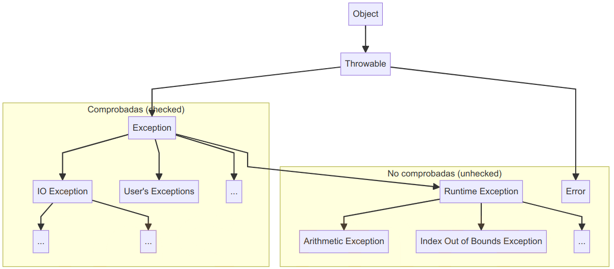

2.6 Control de excepciones
1. ¿Qué es una Excepción?
A lo largo de nuestro aprendizaje de Java, hemos lidiado con errores de sintaxis, como la falta de un punto y coma o un nombre de variable incorrecto. Estos errores son detectados y señalados por el compilador, y podemos corregirlos para lograr que el programa compile correctamente.
Pero, ¿existen otros tipos de errores? ¿Podrían existir errores no sintácticos en nuestros programas? Sí, un programa puede estar libre de errores de sintaxis y aun así fallar en tiempo de ejecución. Estos errores, que suelen aparecer cuando algo inesperado sucede mientras se ejecuta el programa, se conocen como excepciones.
Java cuenta con un sistema de manejo de excepciones robusto que permite detectar, capturar y gestionar estos errores de manera específica.
1.1. Tipos de excepciones
Los errores de tiempo de ejecución pueden ser de dos tipos principales:
- Errores: en este caso hablamos de errores fatales que ocurren durante la ejecución de un programa, como errores de hardware, errores de memoria… Estos errores no se pueden gestionar desde dentro de una aplicación Java.
- Excepciones: son errores no críticos que se pueden gestionar (archivos no encontrados, errores de análisis…). Dentro de este tipo de errores podemos hablar de:
_ Excepciones en tiempo de ejecución : no es necesario detectarlas y, en general, son difíciles de predecir. Por ejemplo, asignar un valor nulo a una variable o sobrepasar los límites de una matriz.
_ Excepciones comprobadas : estas excepciones deben detectarse o declararse para que se generen. En otras palabras, si usamos una función que puede generar este tipo de excepciones, el compilador se quejará si no detectamos la excepción o la generamos nuevamente. Por ejemplo, siempre que llamamos a la instrucciónThread.sleep, debemos capturar o generar una excepciónInterruptedException.

Sin embargo, cada tipo de excepción es una subclase del tipo principal Exception. Esta clase almacena el mensaje de error producido por la excepción. Existen otras subclases que almacenan información más específica. Por ejemplo, ParseException es una subclase de Exception que se genera cuando los datos no se pueden analizar correctamente. Almacena el mensaje de error junto con la posición en la que se encontró el error.
1.2. Tipos de gestión de excepciones
Siempre que se produce una excepción en un programa, podemos decidir cómo tratarla. Básicamente, tenemos dos opciones en nuestro código:
a) Capturar la excepción. Esto significa que la excepción se “destruye” y podemos mostrar en su lugar un mensaje de error personalizado y controlado.
b) Lanzar la excepción. En este caso, no queremos preocuparnos por la excepción y delegamos en otro fragmento de código para que la trate.
En las siguientes secciones de este documento aprenderemos cómo gestionar estas dos opciones.
2. Capturar excepciones: try-catch-finally
Para capturar excepciones, Java utiliza la estructura try-catch-finally, donde:
trycontiene el código que puede generar una excepción.catchcaptura y maneja la excepción lanzada.finally(opcional) ejecuta código que debe correr siempre, haya o no una excepción.
Sintaxis
try {
// Código que puede lanzar una excepción
} catch (Tipo_excepcion_1 objeto_excepcion) {
// Manejo de Tipo_excepcion_1
} catch (Tipo_excepcion_2 objeto_excepcion) {
// Manejo de Tipo_excepcion_2
} finally {
// Código que se ejecuta siempre
}Podemos agregar tantas cláusulas catch como necesitemos, y cada una puede representar un tipo de excepción específico. Sin embargo, debemos ordenar estas cláusulas catch, de forma que las más genéricas se coloquen al final; pues el programa entrará en la primera cláusula catch que coincida con la excepción producida. Es decir, si ponemos la cláusula catch(Exception) al principio, el resto de cláusulas no tendrán efecto, ya que cualquiera de ellas es subtipo de Exception y, por tanto, serán capturadas por la primera cláusula.
Ejemplo básico
Este programa captura dos tipos de excepciones, IOException y NumberFormatException, y asegura que las instrucciones de finally se ejecuten siempre:
import java.io.*;
public class EjemploExcepciones {
public static void main(String[] args) {
BufferedReader tec = new BufferedReader(new InputStreamReader(System.in));
int numero = -1;
try {
System.out.print("Introduce un número: ");
String entrada = tec.readLine();
numero = Integer.parseInt(entrada);
System.out.println("Número introducido: " + numero);
} catch (IOException e) {
System.err.println("Error al leer entrada: " + e.getMessage());
} catch (NumberFormatException e) {
System.err.println("Error: se esperaba num entero: " + e.getMessage() );
} finally {
System.err.println("Programa finalizado.");
}
}
}El método getMessage obtiene el mensaje de error producido por la excepción. Observa que estamos usando System.err en lugar de System.out porque estamos imprimiendo un error y, en ese caso, deberíamos usar la salida de error predeterminada en lugar de la salida normal predeterminada.
También podemos usar el método printStackTrace para imprimir un seguimiento completo de la pila del error; de modo que podamos ver la pila de llamadas que produjeron el error (es decir, los métodos que se llamaron hasta que se produjo el error).
3. Lanzar excepciones. Delegación de excepciones con throws
Cuando un método puede lanzar una excepción, pero no la captura, podemos delegar la gestión al método que llama, usando throws.
Ejemplo:
public class DelegacionExcepciones {
public static int dividir(int a, int b) throws ArithmeticException {
if (b == 0) {
throw new ArithmeticException("No se puede dividir entre cero");
}
return a / b;
}
public static void main(String[] args) {
try {
int resultado = dividir(10, 0);
System.out.println("Resultado: " + resultado);
} catch (ArithmeticException e) {
System.out.println("Error de división: " + e.getMessage());
}
}
}ArithmeticException con el mensaje "No se puede dividir entre cero". Esto detendrá la ejecución del método dividir y transferirá el control al bloque catch que pueda estar manejando esta excepción.
Ejercicio 1: Captura de excepciones
Crea un programa llamado CalculateDensity que pida al usuario que escriba un peso (en gramos) y un volumen (en litros). Luego, el programa debe generar la densidad, que se calcula dividiendo el peso entre el volumen.
El programa debe capturar todos los tipos de excepciones posibles: NumberFormatException y ArithmeticException siempre que se puedan generar.
Solución:
import java.util.Scanner;
public class CalculateDensity {
public static void main(String[] args) {
Scanner sc = new Scanner(System.in);
double peso = 0;
double volumen = 0;
double densidad = 0;
try {
System.out.print("Introduce el peso en gramos: ");
peso = Double.parseDouble(sc.nextLine());
System.out.print("Introduce el volumen en litros: ");
volumen = Double.parseDouble(sc.nextLine());
densidad = peso / volumen;
System.out.println("La densidad es: " + densidad + " g/L");
} catch (NumberFormatException e) {
System.out.println("Error: Entrada no válida. Asegúrate de introducir un número.");
} catch (ArithmeticException e) {
System.out.println("Error: No se puede dividir por cero. Introduce un volumen válido.");
} finally {
sc.close();
}
}
}Ejercicio 2: Lanzar excepciones
Crea un programa llamado WaitApp con un método llamado waitSeconds que recibirá una cantidad de segundos (entero) como parámetro. Internamente, este método llamará al método Thread.sleep para pausar el programa la cantidad de segundos dada (esta función trabaja con milisegundos, por lo que debes convertir segundos a milisegundos al llamarla). Como el método sleep puede lanzar un elemento InterruptedException (tendrás que lidiar con él).
En este caso, se te pide que lances la excepción desde el método waitSeconds y la captures en el método main , que llamará a waitSeconds con la cantidad de segundos especificada como parámetro main (dentro del parámetro String[] args).
Después de esperar la cantidad de segundos especificada, el programa mostrará un mensaje de "Finalizar" antes de salir.
Solución:
public class WaitApp {
// Método que pausa el programa por una cantidad de segundos especificada
public static void waitSeconds(int seconds) throws InterruptedException {
// Convierte segundos a milisegundos y utiliza Thread.sleep
Thread.sleep(seconds * 1000);
}
public static void main(String[] args) {
// Verifica que se haya pasado un argumento para la cantidad de segundos
if (args.length != 1) {
System.out.println("Uso: java WaitApp <segundos>");
return;
}
try {
// Convierte el argumento a un entero
int seconds = Integer.parseInt(args[0]);
System.out.println("Esperando " + seconds + " segundos...");
// Llama al método que pausa el programa
waitSeconds(seconds);
// Muestra el mensaje de finalización después de la espera
System.out.println("Finalizar");
} catch (NumberFormatException e) {
System.out.println("Por favor, proporciona un número válido de segundos.");
} catch (InterruptedException e) {
System.out.println("La espera fue interrumpida.");
}
}
}4. Excepciones Comunes en Java
| Nombre | Descripción |
|---|---|
FileNotFoundException |
Se lanza cuando el archivo especificado no se encuentra. |
ClassNotFoundException |
Se lanza cuando la clase especificada no está disponible. |
EOFException |
Se lanza cuando se llega al final de un archivo inesperadamente. |
ArrayIndexOutOfBoundsException |
Se lanza cuando se accede a un índice de matriz no válido. |
StringIndexOutOfBoundsException |
Se lanza cuando se accede a una posición de un string que está fuera de su rango válido. |
NumberFormatException |
Se lanza al intentar convertir un dato alfanumérico a numérico. |
NullPointerException |
Se lanza cuando se accede a un objeto que no ha sido inicializado. |
IOException |
Generaliza las excepciones de entrada/salida. |
ArithmeticException |
Se lanza al intentar dividir un número entre cero. |
InputMismatchException |
Permite manejar errores de entrada y guiar al usuario para que proporcione el tipo de dato correcto |
Cada excepción es capturada según su tipo específico, y las más generales se colocan al final.
Ejemplo de Múltiples Excepciones:
import java.io.*;
public class EjemploMultiplesExcepciones {
public static void main(String[] args) {
try {
BufferedReader br = new BufferedReader(new FileReader("archivo.txt"));
String linea = br.readLine();
int numero = Integer.parseInt(linea);
System.out.println("Número leído: " + numero);
} catch (FileNotFoundException e) {
System.out.println("Archivo no encontrado.");
} catch (IOException e) {
System.out.println("Error de entrada/salida.");
} catch (NumberFormatException e) {
System.out.println("Formato incorrecto, se esperaba un número.");
}
}
}En este ejemplo, el programa intenta abrir un archivo y leer un número. Los errores posibles son FileNotFoundException si el archivo no existe, IOException si ocurre un problema de lectura, y NumberFormatException si el contenido no es un número válido.
5. Excepciones Personalizadas
Para crear y lanzar excepciones personalizadas en Java, puedes seguir un patrón bastante común que consiste en extender (heredar de) la clase Exception o RuntimeException.
Ejemplo de Excepción Personalizada:
public class PruebaExcepcionPersonalizada {
public static void verificarEdad(int edad) throws FueraDeRangoException {
if (edad < 0 || edad > 120) {
throw new FueraDeRangoException("Edad fuera del rango permitido (0-120)");
}
System.out.println("Edad válida: " + edad);
}
public static void main(String[] args) {
try {
int edad = 150;
verificarEdad(edad);
} catch (FueraDeRangoException e) {
System.out.println(e.getMessage());
}
}
}
// clase excepción FueraDeRangoException
class FueraDeRangoException extends Exception {
public FueraDeRangoException(String mensaje) {
super(mensaje);
}
}